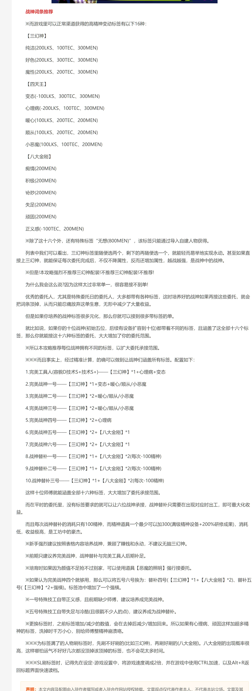

人才词条一览
据点经营里可招募、可派遣的人物（下称人才，游戏内作「人材」）各带三项属性：
| 属性 | 含义 |
|---|---|
| 容貌 LKS | 对外的门面数值，参与各类竞争判定 |
| 技巧 TEC | 与 武器系统与选型 里的技巧同名，同样关系被动技能与判定的成功率 |
| 精神 MEN | 即耐久。它会随玩法流程持续消耗，是人才最需要补强的一项 |
词条（标签）是叠加在这三项属性上的修正。每个人才最多同时拥有 3 个词条， 因此「凑出三个能把精神拉回来的词条」是人才养成的核心。
词条一览
| 类别 | 词条 | 容貌(LKS) | 技巧(TEC) | 精神(MEN) |
|---|---|---|---|---|
| 三幻神 | 纯洁 | +200 | +100 | +300 |
| 三幻神 | 好色 | +200 | +300 | +300 |
| 三幻神 | 魔性 | +200 | +200 | +300 |
| 四天王 | 变态 | -100 | +300 | +300 |
| 四天王 | 心理病 | -200 | +100 | +300 |
| 四天王 | 暖心 | +100 | +200 | +200 |
| 四天王 | 顺从 | +100 | +200 | +200 |
| 四天王 | 小恶魔 | +100 | +100 | +200 |
| 八大金刚 | 痴情 | — | — | +200 |
| 八大金刚 | 积极 | — | — | +200 |
| 八大金刚 | 冷酷 | — | — | +200 |
| 八大金刚 | 贫苦 | — | — | +200 |
| 八大金刚 | 奇妙 | — | — | +200 |
| 八大金刚 | 失足 | — | — | +200 |
| 八大金刚 | 顽固 | — | — | +200 |
| 八大金刚 | 正义感 | — | -100 | +200 |
| 特殊 | 无想 | — | — | +800 |
读表要点
- 表内数值是修正值：
+200表示该属性加 200，-100表示减 100，
— 表示该词条对这一项没有修正（原表只写了有修正的那几项，— 是本站为可读性补的标注，不是 0）。
- 常规渠道可获得的词条共 16 种，社区按强度习惯分为三组：
三幻神（3）· 四天王（5）· 八大金刚（8）。三组里只有三幻神与四天王会同时调整容貌与技巧， 八大金刚中的 7 种只加精神。
- 「无想」是特殊词条，不在常规渠道内，只能通过导入自建人物获得，精神修正为 800，远超其余词条。
- 分组名称（三幻神 / 四天王 / 八大金刚）是社区习惯叫法，不是游戏内原文。
机制说明
- 词条数上限为 3。已有同名词条时不再重复生效。
- 换掉词条时数值会一并回退：某词条带来的加减值，在它被移除后会原样扣回 / 加回。
原文特别提醒，像「心理病」「顽固」这类精神修正很高的词条，撤掉时要留意精神值的变化。
- 原文另提及存在词条「强横」，出现于其给出的配装思路中，但未给出数值，
因此本表不列。如你手上有该词条的数值，欢迎补充。
- 词条的获取与替换依赖具体玩法流程，属于养成规划范畴，本站不展开。

内容出处
词条名与数值：百度贴吧多娜多娜吧攻略《战神词条推荐 最强人才词条一览》， 作者 爱情de天国；本表按逗游网 2021-04-06 的转载版本核对：
https://doyo.cn/article/437242关于完整性：现有截图只列到 14 种（八大金刚缺「冷酷」「贫苦」），与文中 「16 种」的表述不符；这 2 种已按上述原文补齐。表中 16 + 1 行全部逐条核对过。
内容边界：该原文的主体是一套以「扩大可承接委托范围、提高收益」为目标的养成配装方案 （十位人才的词条配置）。按本站对成人向游戏的收录边界—— 只收系统与数值资料，不写养成攻略——本页仅收录词条与其数值修正、机制说明， 不收录配装方案与收益计算。